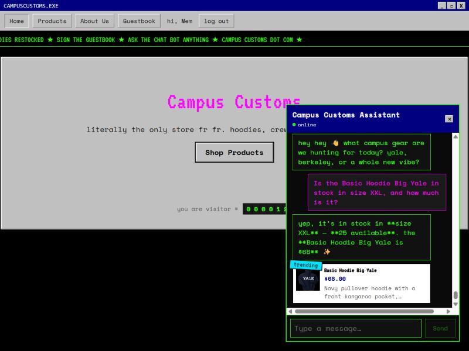
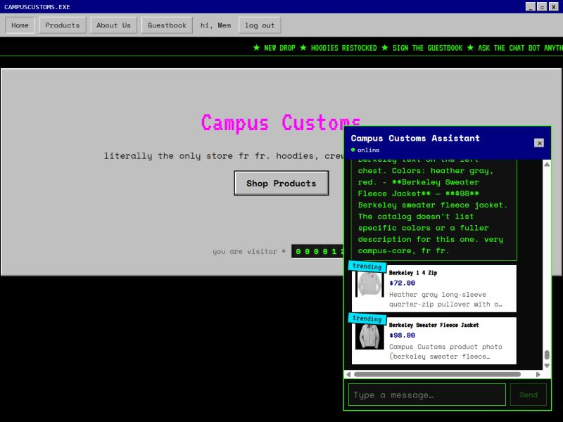
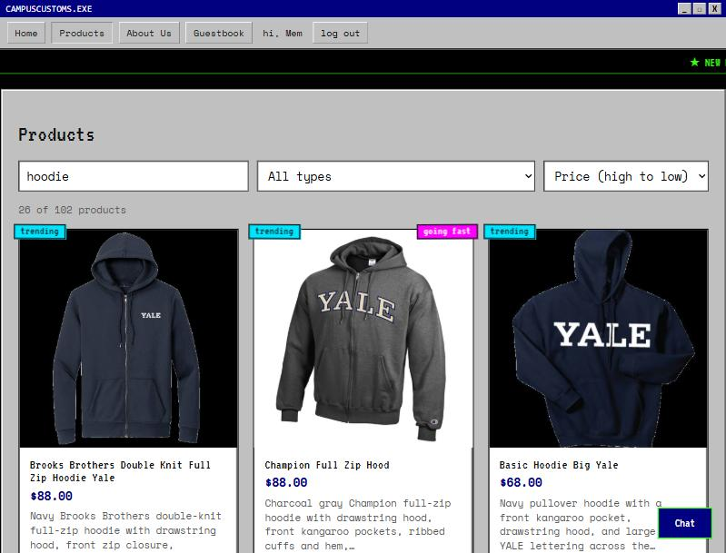

Problem 11: three live checks of the running site (frontend on :5173, backend on :8000), each verified against the real database, not scripted/fake data.

Asked the chat "Is the Basic Hoodie Big Yale in stock in size XXL, and how much is it?" It replied "25 available" at "$68" — both numbers match the inventory and catalogue tables in campus_customs.db exactly, confirming the agent reads real stock and price data instead of inventing an answer.

Asked the chat "Show me your Berkeley gear." The agent searched the catalogue and the website rendered matching product cards (image, name, price, short description) live underneath the reply, without a page reload — each card also links to that product's full detail page.

On the Products page, typed "hoodie" into search and set sort to "Price (high to low)." The grid live-narrowed from 102 to 26 products, the count updated instantly, and results re-ordered correctly by price ($88, $88, $68, ...) — all client-side, no page reload.